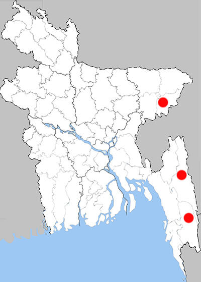

Losaria coon
Common Clubtail
Recorded Place:
Moulavibazar, Rangamati, Bandarban

Literature Records:
Chowdhury, S.H. & M. Hossain (2025). PP: 315. Butterflies of Bangladesh-A Pictorial Handbook (Revised and enlarged version II). Dhaka, Bangladesh, 260pp.
Hossain M.M. (2023). A review on the diversity of butterfly (Insecta: lepidoptera) fauna from Bangladesh. Bangladesh Journal of Zoology. 51(1): 03-34
Shihan T.R. (2016). A Photographic Guide to theButterflies of Bangladesh. Butterfly Reintroduction Farm,Chuadanga, Bangladesh, 165pp.